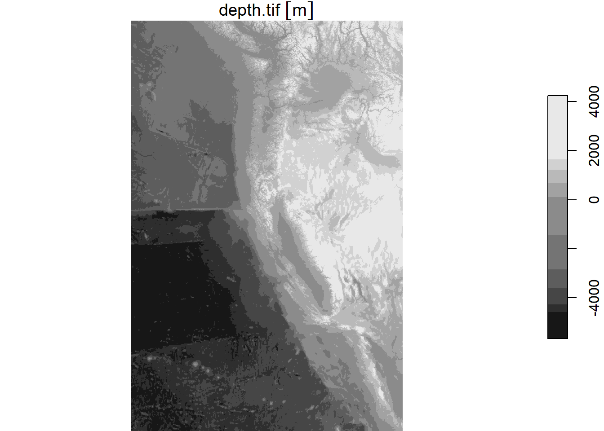

# Load libraries
library(tidyverse)
library(here)
library(tmap)
library(ggplot2)
library(stars)
library(spDataLarge)eds223_hw4_Aoverbye
Homework Assignment 4
Prioritizing potential aquaculture
Creating A Function
“To make your workflow generalizable, you must create a function that has the following characteristics:
arguments:
- minimum and maximum sea surface temperature
- minimum and maximum depth species name
outputs:
- map of EEZ regions colored by amount of suitable area species
- species name should be included in the map’s title
Prepare data
# Load data
# Read in NOAA Sea Surface Temperature files
sst_avg2008 <- read_stars(here("data", "average_annual_sst_2008.tif"))
sst_avg2009 <- read_stars(here("data", "average_annual_sst_2009.tif"))
sst_avg2010 <- read_stars(here("data", "average_annual_sst_2010.tif"))
sst_avg2011 <- read_stars(here("data", "average_annual_sst_2011.tif"))
sst_avg2012 <- read_stars(here("data", "average_annual_sst_2012.tif"))
# Read in Bathymetry files
depth <- read_stars(here("data", "depth.tif"))
# Load wc_regions shape file
wc_regions_clean <- st_read(here("data", "Wc_regions_clean.shp"))Reading layer `wc_regions_clean' from data source
`C:\MEDS\eds223\hw4-Aoverbye\data\wc_regions_clean.shp' using driver `ESRI Shapefile'
Simple feature collection with 5 features and 5 fields
Geometry type: MULTIPOLYGON
Dimension: XY
Bounding box: xmin: -129.1635 ymin: 30.542 xmax: -117.097 ymax: 49.00031
Geodetic CRS: WGS 84Preliminary Data Exploration
My first step in this project is getting an overview of the data I am. I do this by looking at the first 5 rows(head) of any shape files and by doing a quick plot of the tif files.
# View the column names of the wc_regions data
print(colnames(wc_regions_clean))[1] "rgn" "rgn_key" "area_m2" "rgn_id" "area_km2" "geometry"print(head(wc_regions_clean))Simple feature collection with 5 features and 5 fields
Geometry type: MULTIPOLYGON
Dimension: XY
Bounding box: xmin: -129.1635 ymin: 30.542 xmax: -117.097 ymax: 49.00031
Geodetic CRS: WGS 84
rgn rgn_key area_m2 rgn_id area_km2
1 Oregon OR 179994061293 1 179994.06
2 Northern California CA-N 164378809215 2 164378.81
3 Central California CA-C 202738329147 3 202738.33
4 Southern California CA-S 206860777840 4 206860.78
5 Washington WA 66898309678 5 66898.31
geometry
1 MULTIPOLYGON (((-123.4318 4...
2 MULTIPOLYGON (((-124.2102 4...
3 MULTIPOLYGON (((-122.9928 3...
4 MULTIPOLYGON (((-120.6505 3...
5 MULTIPOLYGON (((-122.7675 4...# Plot bathymetry data
plot(depth)
I am only going to show one plot of the surface temperature data because that is all I need right now to get an idea of how it will look.
# Plot the temperature data
plot(sst_avg2008)
Process data
Find suitable locations
Determine the most suitable EEZ
Citations
Data
Flanders Marine Institute (VLIZ). (n.d.). Exclusive Economic Zone (EEZ) boundaries. Maritime Boundaries Database, version unknown. Retrieved from https://www.marineregions.org/eez.php (Accessed: November 29, 2024)
General Bathymetric Chart of the Oceans (GEBCO) Compilation Group. (2022). GEBCO_2022 Grid [Data set]. https://doi.org/10.5285/e0f0bb80-ab44-2739-e053-6c86abc0289c (Accessed: November 29, 2024)
National Oceanic and Atmospheric Administration (NOAA). (2018). Daily Global 5km Satellite Sea Surface Temperature Anomaly (Version 3.1). NOAA Coral Reef Watch. Retrieved from https://coralreefwatch.noaa.gov/product/5km/index_5km_ssta.php (Accessed: November 29, 2024)